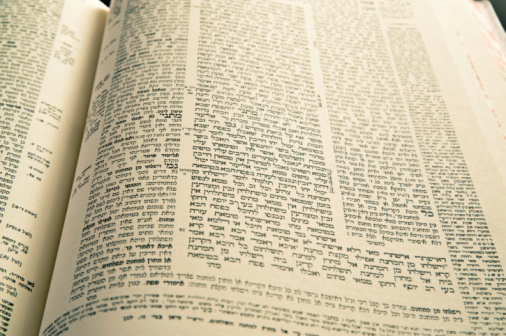

קצת עליי
שלום, אני אושרי, אוטוטו בן 36 בע"ה. נשוי ואבא ל־2 ילדים מתוקים ב"ה.
גר באבן שמואל – יישוב דתי ליד קרית גת.
אני אדם שמאמין בעשייה יומיומית, בסדר וארגון, ובהשקעה בדברים החשובים באמת.
עבודה ועשייה
אני עובד במטבח של אולפנה ליד הבית – בעיקר מטעמי נוחות (או כמו שאני קורא לזה: מלכודת דבש 😅).
בפועל אני עושה שם כמעט הכול חוץ מלבשל – לוגיסטיקה, ארגון ותפעול.
בנוסף, אני מעביר חוג לגו הנדסי פעם בשבוע לילדי גן חובה ויסודי – שילוב מושלם של חינוך, חשיבה ויצירתיות.
תחביבים ואהבות
⚽ אוהב מאוד לשחק כדורגל ולהתעניין בספורט
💛💙 אוהד שרוף של מכבי תל אביב
📖 לומד אמונה, חינוך, זוגיות ודף יומי בגמרא – ההייטק של הדתיים 😉
🧩 סדר, ארגון וירידה לפרטים – אולי אפילו קצת פדנט

דף יומי בגמרא
דרך ועתיד
אני מרגיש סיפוק עצום כשאני מסיים יום שבו לא ויתרתי לעצמי –
ובמקום לברוח למסכים, השקעתי קודם כל בלימוד היומי ובמשימות החשובות.
החלום שלי הוא לעסוק במקצוע שאני אוהב. כשנחשפתי לעולם ה־QA הרגשתי שהוא יכול להתאים לאופי שלי –
אתגרי, מדויק וגם מתגמל.
בחרתי ללמוד אצל גל בעקבות המלצות חמות, ומהרגע הראשון הבנתי כמה זה נכון.
כולי תפילה שהדרך הזו תוביל אותי למקום שבו אוכל לבטא את היכולות שלי בע"ה 🙌🏾